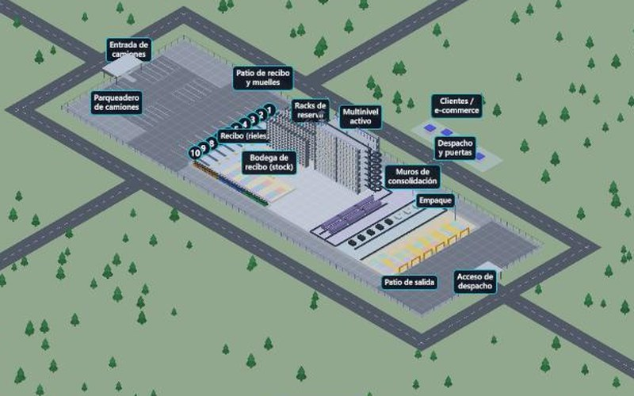

Simulación 3D · Logística3D simulation · Logistics
Simulador de centro de distribuciónDistribution center simulator
Simulador 3D isométrico de un centro de distribución que empieza vacío: llegan camiones con fecha, hora y ruta por región de Colombia, descargan en 10 muelles y cada caja se inventaría. Montacargas llevan los pallets a la bodega, a una reserva con racks de 10 niveles y a un multinivel activo de 8 pisos; los pedidos se empacan y salen en camiones por ciudad, con mapa en ruta, entrega a tiempo (OTD) y disrupciones que se pueden provocar. Motor de eventos propio con semilla reproducible; geometría y audio generados, sin modelos ni archivos de terceros. Isometric 3D simulator of a distribution center that starts empty: trucks arrive with date, time and a route by Colombian region, unload at 10 docks and every box is inventoried. Forklifts move pallets to the receiving warehouse, to a 10-level rack reserve and to an 8-floor active multilevel; orders are packed and leave in trucks, one per city, with a live route map, on-time delivery (OTD) and disruptions you can trigger. Custom event engine with a reproducible seed; geometry and audio are generated, with no third-party models or files.
